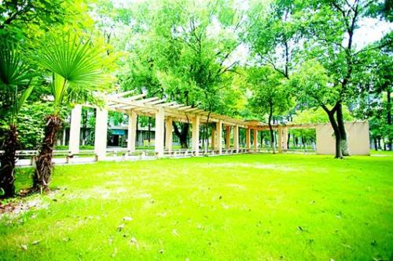

青春是最美好的相遇
在威斯敏斯特教堂旁边，矗立着一块墓碑，上面刻着一段非常著名的话：“当我年轻的时候，我梦想改变这个世界；当我成熟以后，我发现我不能改变这个世
界，我将目光缩短了些，我决定只改变为的国家；当我进入暮年以后，我发现我不能改变我的国家，我的最后愿望仅仅是改变一下我的家庭，但是，这也不可能。
当我现在躺在床上，行将就木时，我突然意识到；如果一开始我仅仅去改变为自己，然后，我可能改变我的家庭；在家人的帮助和鼓励下，我可能为国家做一些事情；
然后，谁知道呢？我甚至可能改变这个世界。”
——题记

1.我们的相遇
漫漫青春路，多少分岔路口，青春蹉跎，机会错过。而我，庆幸遇上了柳职的老师。
2.我的感恩
敲完最后一行代码，走出办公室，站在曾经觉得高大上的落地窗前，看着倒影中的自己，虽说有点累，但感到
特别充实，许久没有过这种踏实和平静的感觉。我喜欢并珍惜作为程序员的日子。这一切，都要感谢柳职以及
柳职的每一位老师。

3.梦想花开
我庆幸在最美的年华，最渴望改变的时候遇到了柳职，庆幸遇上了柳职的老师，因为你们的专业和专注，才成就了我向往的IT梦，
才让我在青春的路上开满了理想的花。在此真心感谢柳职的每一位老师，纵然时光荏苒，师恩永远铭记在心。